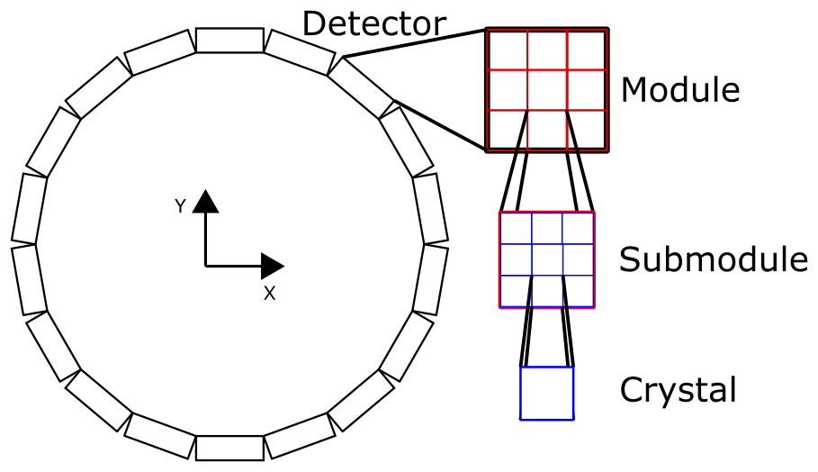

Detector geometries¶
Current version of TOPAS-Imaging extension support 2 types of detectors.
Flat-panel detector¶
Flat-panel detector is widely used for medical imaging systems. It is used for Cone-beam CT and Prompt gamma in this extension. The flat-panel detector in this extension composed of 4 components.
Anti-scatter grid,
Prefilter,
Scintillator, and
Thin-film transistor.
You can define flat-panel detector as follows. The size of detector is determined by the size of scintillator. The followoing TOPAS parameters build a flat-panel detector with carbor filter, CsI scintillator layer, and photodetector.
- You can add anti-scatter grid by setting::
b:Ge/CBCTImager/Collimator/Exists as “True”
The scintillating crystal can be either cylinder of box.
If you want to use rectangle crystals, you need to define Ge/CBCTImager/Crystal/HLX, Ge/CBCTImager/Crystal/HLY, and Ge/CBCTImager/Crystal/HLZ instead of Ge/CBCTImager/Crystal/HL and Ge/CBCTImager/Crystal/Radius.
#======== Flat imager ========
s:Ge/CBCTImager/Type = "FlatImager"
s:Ge/CBCTImager/Material = "Vacuum"
s:Ge/CBCTImager/Parent = "World"
d:Ge/CBCTImager/TransZ = -500 mm
d:Ge/CBCTImager/HLX = Ge/CBCTImager/Crystal/HLX mm * Ge/CBCTImager/Crystal/NbOfXBins
d:Ge/CBCTImager/HLY = Ge/CBCTImager/Crystal/HLY mm * Ge/CBCTImager/Crystal/NbOfYBins
d:Ge/CBCTImager/HLZ = Ge/CBCTImager/Crystal/HLZ mm * Ge/CBCTImager/Crystal/NbOfZBins
#======== Anti-scatter grid ========
b:Ge/CBCTImager/Collimator/Exists = "False"
s:Ge/CBCTImager/Collimator/Material = "G4_W"
s:Ge/CBCTImager/Collimator/OpeningMaterial = "Air"
d:Ge/CBCTImager/Collimator/HL = 10 mm
u:Ge/CBCTImager/Collimator/XSeptaThicknessPercentage = 0.2
u:Ge/CBCTImager/Collimator/ZSeptaThicknessPercentage = 0.2
#======== Prefilter ========
sv:Ge/CBCTImager/Prefilters/Materials = 1 "Carbon"
dv:Ge/CBCTImager/Prefilters/Thicknesses = 1 50 um
#======== Scintillator ======
s:Ge/CBCTImager/Crystal/Material = "CsI"
s:Ge/CBCTImager/Crystal/Shape = "Cylinder" # "Box"
d:Ge/CBCTImager/Crystal/HL = 180 mm
d:Ge/CBCTImager/Crystal/Radius = 9.0 mm
d:Ge/CBCTImager/Crystal/ReflectorThickenss = 1.2 mm
s:Ge/CBCTImager/Crystal/ReflectorMaterial = "SiO2"
i:Ge/CBCTImager/Crystal/NbOfXBins = 11
i:Ge/CBCTImager/Crystal/NbOfYBins = 11
i:Ge/CBCTImager/Crystal/NbOfZBins = 1
d:Ge/CBCTImager/Crystal/XGap = 0 mm
d:Ge/CBCTImager/Crystal/ZGap = 0 mm
#======== Photodetector ========
s:Ge/CBCTImager/PhotoDetector/Type = "TsBox"
d:Ge/CBCTImager/PhotoDetector/HLZ = 180 um
s:Ge/CBCTImager/PhotoDetector/Material = "SiO2"
i:Ge/CBCTImager/PhotoDetector/XBins = 512
i:Ge/CBCTImager/PhotoDetector/YBins = 512
Ring-shaped detector¶
Ring-shaped detector is another type of detector commonly used for PET or SPECT system.
The ring-shaped detector has hierachial structure as clinical systems.
Cyrstal components compose submodel, submodules compose module, and modules compose detector.
#======== Crystals ========
d:Ge/PETScanner/CrystalHLX = 1.168835 mm
d:Ge/PETScanner/CrystalHLY = 10 mm
d:Ge/PETScanner/CrystalHLZ = 1.168835 mm
i:Ge/PETScanner/NbOfXBins = 22
i:Ge/PETScanner/NbOfYBins = 1
i:Ge/PETScanner/NbOfZBins = 22
#======== Submodule ========
d:Ge/PETScanner/SubmoduleHLX = Ge/PETScanner/CrystalHLX mm * Ge/PETScanner/NbOfXBins
d:Ge/PETScanner/SubmoduleHLY = Ge/PETScanner/CrystalHLY mm * Ge/PETScanner/NbOfYBins
d:Ge/PETScanner/SubmoduleHLZ = Ge/PETScanner/CrystalHLZ mm * Ge/PETScanner/NbOfZBins
i:Ge/PETScanner/NbOfSubmodulesX = 1
i:Ge/PETScanner/NbOfSubmodulesY = 1
i:Ge/PETScanner/NbOfSubmodulesZ = 1
#======== Module ========
d:Ge/PETScanner/ModuleHLX = Ge/PETScanner/SubmoduleHLX mm * Ge/PETScanner/NbOfSubmodulesX
d:Ge/PETScanner/ModuleHLY = Ge/PETScanner/SubmoduleHLY mm * Ge/PETScanner/NbOfSubmodulesY
d:Ge/PETScanner/ModuleHLZ = Ge/PETScanner/SubmoduleHLZ mm * Ge/PETScanner/NbOfSubmodulesZ
i:Ge/PETScanner/NbOfModulesX = 1
i:Ge/PETScanner/NbOfModulesY = 1
i:Ge/PETScanner/NbOfModulesZ = 4
#======== Detector ========
d:Ge/PETScanner/HLX = Ge/PETScanner/ModuleHLX mm * Ge/PETScanner/NbOfModulesX
d:Ge/PETScanner/HLY = Ge/PETScanner/ModuleHLY mm * Ge/PETScanner/NbOfModulesY
d:Ge/PETScanner/HLZ = Ge/PETScanner/ModuleHLZ mm * Ge/PETScanner/NbOfModulesZ
d:Ge/PETScanner/RingRadius = 173.25 mm
d:Ge/PETScanner/MarginRings = 0 mm
i:Ge/PETScanner/NbOfDetectors = 21